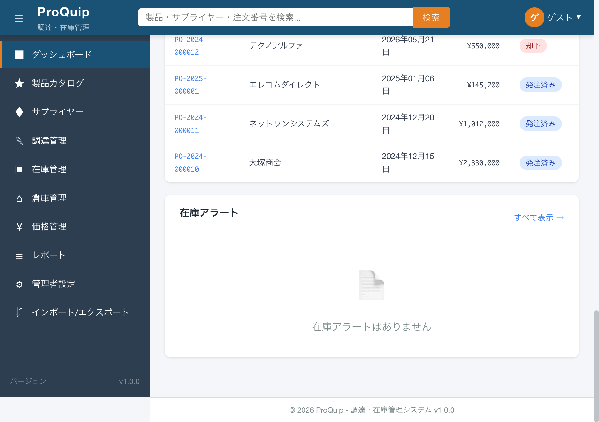

最終更新: 2026-05-22
画面最下部のフッター領域。コピーライトとバージョン情報を中央揃えで表示。
screenshots/F-12/F-12-03-001_footer_initial.png

画面最下部に表示されるフッター。「© {現在年} ProQuip - 調達・在庫管理システム v1.0.0」のテキストを中央揃えで表示する。
著作権表示とシステムバージョンの明示。問い合わせ・障害報告時のバージョン特定にも利用。
| 項目名 | 表示条件 | 値の取得元 | 備考 |
|---|---|---|---|
| コピーライトシンボル（©） | 常時 | HTMLエンティティ © | |
| 年 | 常時 | new Date().getFullYear()（コンポーネントプロパティ currentYear） | 動的に現在年を取得。2026年時点では「2026」 |
| システム名「ProQuip - 調達・在庫管理システム」 | 常時 | 固定文字列（テンプレート直書き） | |
| バージョン「v1.0.0」 | 常時 | 固定文字列（テンプレート直書き） | サイドバーのバージョン表示（F-12-02-011）と同一値 |
なし（表示専用）
なし（クリックイベント等は未設定）
全画面で画面下部に「© 2026 ProQuip - 調達・在庫管理システム v1.0.0」が常時表示される。年は new Date().getFullYear() で動的に取得されるため、年が変わると自動的に更新される。
なし（固定文字列 + JavaScript Date のみ）
なし。全認証ユーザーに表示。
| 状態 | 表示 | 条件 |
|---|---|---|
| サイドバー展開時 | サイドバー幅分の左マージン（margin-left: var(--sidebar-width)） | デフォルト |
| サイドバー折りたたみ時 | 折りたたみ幅分の左マージン（margin-left: var(--sidebar-collapsed-width)） | 親要素に .sidebar-collapsed クラスが付与された場合 |
なし
| ファイルパス | 関数/クラス/メソッド名 | 確認内容 |
|---|---|---|
| proquip-frontend/src/app/core/layout/footer.component.ts | FooterComponent.currentYear | new Date().getFullYear() でコピーライト年を動的取得（:14） |
| proquip-frontend/src/app/core/layout/footer.component.html | footer.app-footer > span | コピーライト + バージョン表示テンプレート（:1-3） |
| proquip-frontend/src/app/core/layout/footer.component.scss | .app-footer | 中央揃え、border-top、サイドバー幅追従のmargin-left（:2-18） |
なし（表示内容に状態変化なし。レイアウトのみサイドバー状態に追従）
High